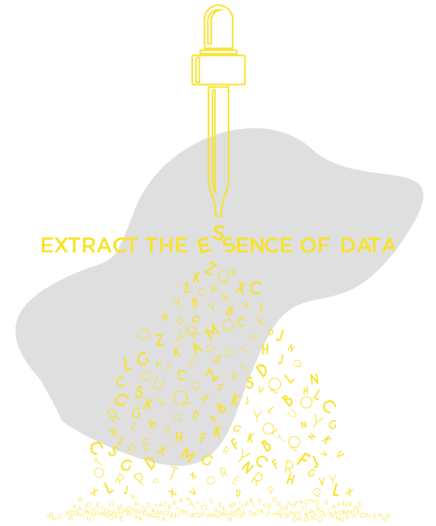

Text Extraction
Our text extraction solutions can extract structured and unstructured text, and convert it into a predefined format. Load your document in any of the formats – be it a pdf, doc or image. Choose from the many ML/DL/Scraping extraction methods. Export to CSV, JSON and many more formats.
Tech Stack
Text analytics using Python libraries are used for extraction and structuring.
Library Used: Tabula, Camelot, Tensorflow, Keras, Pytesseract
Images
Library Used: OpenCV, Tensorflow, Keras, Pytesseract
Websites
Library Used: BeautifulSoup, Scrapy, Selenium
In a Nutshell
Our text extraction tool can automatically extract text from PDFs, images and websites to structure the unstructured data.
Functions (Use Cases)
- Extract tabular and peripheral data from PDFs
- Extract alternative data from websites and APIs
- Redaction of sensitive information extracted from documents such as Bank statements, EHRs, Invoices, KYC, Emails, Legal documents, Research papers, and more.


No manual template designing needed. Deep Learning methods detect the tabular areas and OCR them as tabular data. Sequential text analytics in NLP detect the entities (batch number, issue date etc.) across document irrespective of their position